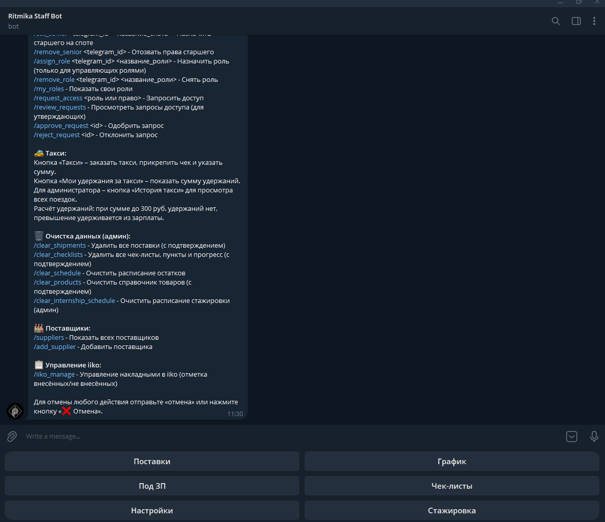
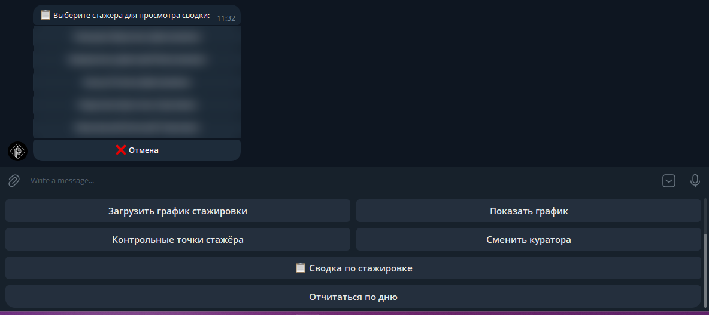
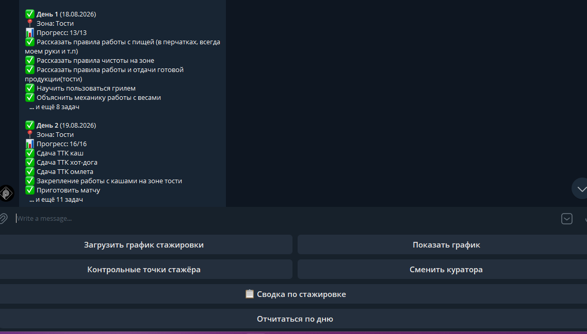

01 · Telegram-бот · Python
Операционный бот для сети кофеен
Три точки и центральный офис вели поставки, графики и остатки в чатах и таблицах вручную. Бот собрал всё в одном месте: сотрудник открывает Telegram и видит только то, что нужно его роли.
- Поставки между точками и закуп — с подтверждением приёмки
- Справочник поставщиков и учёт накладных в iiko: внесено / не внесено
- График смен из Google Таблицы каждые 15 минут, обратно — табель
- Формы остатков и напоминания в чаты точек
- Стажировка: план по дням, кураторы, контрольные точки, прогресс по задачам
- Чек-листы и журнал бариста
- Такси с чеком: до 300 ₽ компенсирует компания, сверх — автоматически в удержания из ЗП
- Роли и права: запрос доступа, одобрение, старшие на точках
Python
Telegram Bot API
Google Sheets API
SQLite


